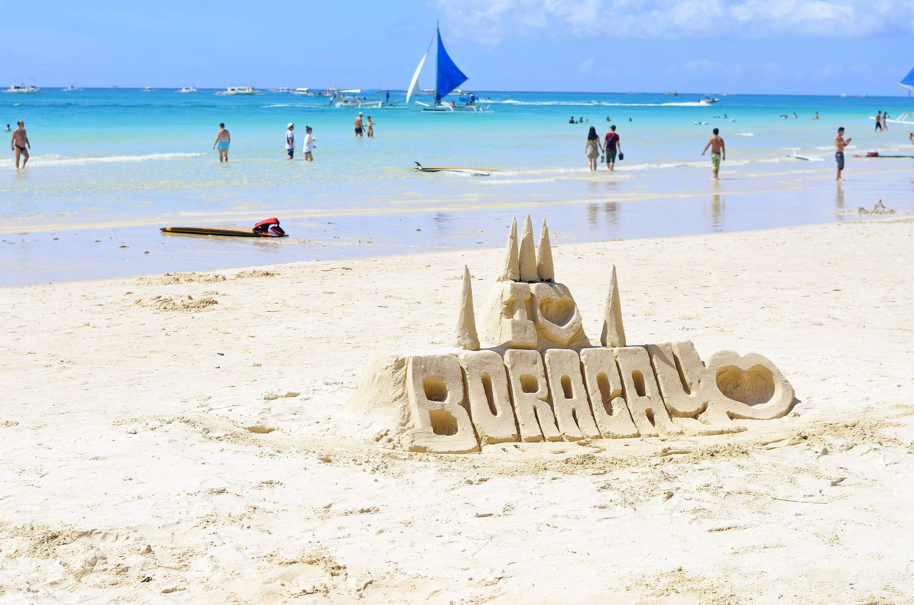
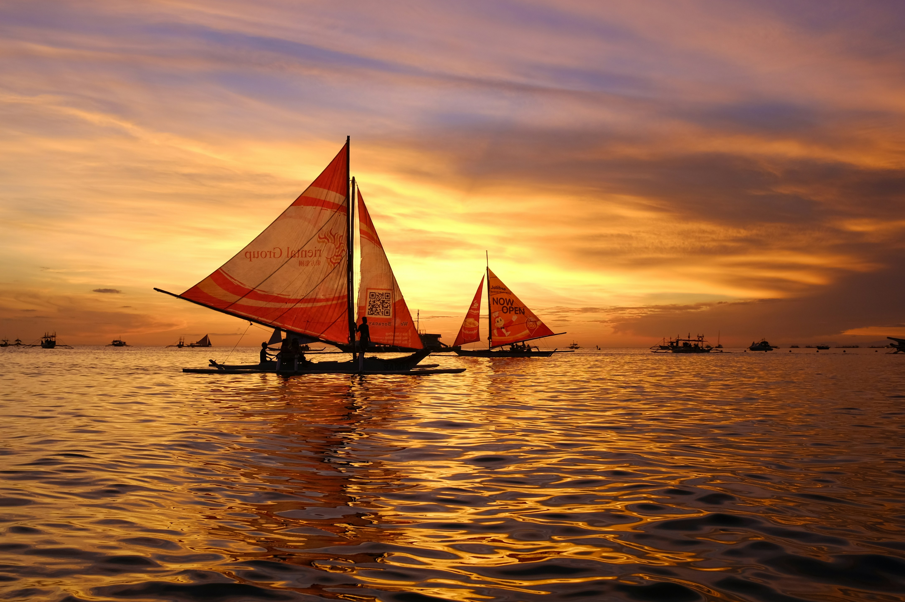

Boracay Sand

Boracay Sunset

Boracay is one of the beautiful places in the Philippines. It has white sand, clear blue water, and amazing sunsets. People can enjoy playing on the beach, building sandcastles, or watching the sunset by the sea. I think Boracay is a great place to relax and enjoy time with family and friends.